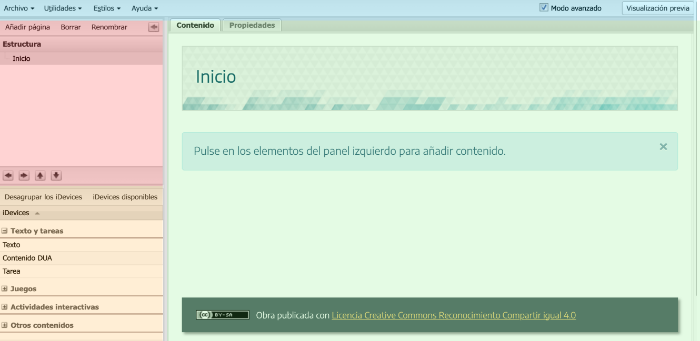

2
Pulsa sobre las áreas o iconos activos de la imagen.
{"typeGame":"Mapa","instructions":"","showMinimize":false,"showActiveAreas":false,"author":"","url":"/previews/C__Users_bit_Documents_2025-EncuentroDocente_Taller-curso_s_1_entornoTrabajo.png","authorImage":"","altImage":"","itinerary":{"showClue":false,"clueGame":"","percentageClue":40,"showCodeAccess":false,"codeAccess":"","messageCodeAccess":""},"points":[{"id":"p1098628326191","title":"Menu principal","type":2,"url":"","video":"","x":0.2595000076293945,"y":0.008740344206900707,"x1":0,"y1":0,"footer":"","author":"","alt":"","iVideo":0,"fVideo":0,"eText":"","iconType":89,"question":"","question_audio":"","toolTip":"","link":"","color":"#000000","fontSize":"14","map":{"id":"a1098628326191","pts":[{"id":"p1198961838405","title":"","type":0,"url":"","video":"","x":0,"y":0,"x1":0,"y1":0,"footer":"","author":"","alt":"","iVideo":0,"fVideo":0,"eText":"","iconType":0,"question":"","question_audio":"","toolTip":"","link":"","color":"#000000","fontSize":"14","map":{"id":"a1198961838405","url":"","alt":"","author":"","pts":[]},"slides":[{"id":"s1198961838405","title":"","url":"","author":"","alt":"","footer":""}],"activeSlide":0}],"url":"","alt":"","author":"","active":0},"slides":[{"id":"s1098628326191","title":"","url":"","author":"","alt":"","footer":""}],"activeSlide":0,"audio":""},{"id":"p58359974114","title":"Estructura","type":2,"url":"","video":"","x":0.019500007629394533,"y":0.2606683745788731,"x1":0,"y1":0,"footer":"","author":"","alt":"","iVideo":0,"fVideo":0,"eText":"","iconType":4,"question":"","question_audio":"","toolTip":"","link":"","color":"#000000","fontSize":"14","map":{"id":"a58359974114","pts":[{"id":"p1188417003012","title":"","type":0,"url":"","video":"","x":0,"y":0,"x1":0,"y1":0,"footer":"","author":"","alt":"","iVideo":0,"fVideo":0,"eText":"","iconType":0,"question":"","question_audio":"","toolTip":"","link":"","color":"#000000","fontSize":"14","map":{"id":"a1188417003012","url":"","alt":"","author":"","pts":[]},"slides":[{"id":"s1188417003012","title":"","url":"","author":"","alt":"","footer":""}],"activeSlide":0}],"url":"","alt":"","author":"","active":0},"slides":[{"id":"s58359974114","title":"","url":"","author":"","alt":"","footer":""}],"activeSlide":0,"audio":""},{"id":"p902564579194","title":"iDevices","type":2,"url":"","video":"","x":0.15075000762939453,"y":0.6308483231649914,"x1":0,"y1":0,"footer":"","author":"","alt":"","iVideo":0,"fVideo":0,"eText":"","iconType":24,"question":"","question_audio":"","toolTip":"","link":"","color":"#000000","fontSize":"14","map":{"id":"a902564579194","pts":[{"id":"p1728712093570","title":"","type":0,"url":"","video":"","x":0,"y":0,"x1":0,"y1":0,"footer":"","author":"","alt":"","iVideo":0,"fVideo":0,"eText":"","iconType":0,"question":"","question_audio":"","toolTip":"","link":"","color":"#000000","fontSize":"14","map":{"id":"a1728712093570","url":"","alt":"","author":"","pts":[]},"slides":[{"id":"s1728712093570","title":"","url":"","author":"","alt":"","footer":""}],"activeSlide":0}],"url":"","alt":"","author":"","active":0},"slides":[{"id":"s902564579194","title":"","url":"","author":"","alt":"","footer":""}],"activeSlide":0,"audio":""},{"id":"p468164032614","title":"Área de trabajo","type":2,"url":"","video":"","x":0.3170000076293945,"y":0.13984575247090397,"x1":0,"y1":0,"footer":"","author":"","alt":"","iVideo":0,"fVideo":0,"eText":"","iconType":44,"question":"","question_audio":"","toolTip":"","link":"","color":"#000000","fontSize":"14","map":{"id":"a468164032614","pts":[{"id":"p709290885907","title":"","type":0,"url":"","video":"","x":0,"y":0,"x1":0,"y1":0,"footer":"","author":"","alt":"","iVideo":0,"fVideo":0,"eText":"","iconType":0,"question":"","question_audio":"","toolTip":"","link":"","color":"#000000","fontSize":"14","map":{"id":"a709290885907","url":"","alt":"","author":"","pts":[]},"slides":[{"id":"s709290885907","title":"","url":"","author":"","alt":"","footer":""}],"activeSlide":0}],"url":"","alt":"","author":"","active":0},"slides":[{"id":"s468164032614","title":"","url":"","author":"","alt":"","footer":""}],"activeSlide":0,"audio":""}],"isScorm":0,"textButtonScorm":"Guardar la puntuación","repeatActivity":false,"textAfter":"","evaluation":0,"selectsGame":[{"typeSelect":0,"numberOptions":4,"quextion":"","options":["","","",""],"solution":"","solutionWord":"","percentageShow":35,"msgError":"","msgHit":""}],"isNavigable":true,"showSolution":true,"timeShowSolution":3,"version":2,"percentajeIdentify":100,"percentajeShowQ":100,"percentajeQuestions":100,"autoShow":false,"autoAudio":true,"optionsNumber":0,"evaluationF":false,"evaluationIDF":"","id":"2025723215058360","order":"","msgs":{"msgSubmit":"Enviar","msgIndicateWord":"Proporcione una palabra o expresión","msgClue":"¡Genial! La pista es:","msgErrors":"Errores","msgHits":"Aciertos","msgScore":"Puntuación","msgMinimize":"Minimizar","msgMaximize":"Maximizar","msgFullScreen":"Pantalla Completa","msgNoImage":"Pregunta sin imágenes","msgSuccesses":"¡Correcto! | ¡Excelente! | ¡Genial! | ¡Muy bien! | ¡Perfecto!","msgFailures":"¡No era eso! | ¡Incorrecto! | ¡No es correcto! | ¡Lo sentimos! | ¡Error!","msgTryAgain":"Necesita al menos un %s% de respuestas correctas para conseguir la información. Vuelva a intentarlo.","msgEndGameScore":"Antes de guardar la puntuación comience la partida.","msgScoreScorm":"La puntuación no se puede guardar porque esta página no forma parte de un paquete SCORM.","msgPoint":"Punto","msgAnswer":"Responder","msgOnlySaveScore":"¡Sólo puede guardar la puntuación una vez!","msgOnlySave":"Sólo puede guardar una vez","msgInformation":"Información","msgYouScore":"Su puntuación","msgOnlySaveAuto":"Su puntuación se guardará después de cada pregunta. Sólo puede jugar una vez.","msgSaveAuto":"Su puntuación se guardará automáticamente después de cada pregunta.","msgSeveralScore":"Puede guardar la puntuación tantas veces como quiera","msgYouLastScore":"La última puntuación guardada es","msgActityComply":"Ya ha realizado esta actividad.","msgPlaySeveralTimes":"Puede realizar esta actividad cuantas veces quiera","msgClose":"Cerrar","msgPoints":"puntos","msgPointsA":"Puntos","msgQuestions":"Preguntas","msgAudio":"Audio","msgAccept":"Aceptar","msgYes":"Sí","msgNo":"No","msgShowAreas":"Mostrar áreas activas","msgShowTest":"Mostrar cuestionario","msgGoActivity":"Pulsa aquí para realizar esta actividad","msgSelectAnswers":"Selecciona las opciones correctas y pulsa sobre el botón 'Responder'.","msgCheksOptions":"Marca todas las opciones en el orden adecuado y pulsa sobre el botón 'Responder'.","msgWriteAnswer":"Escribe la palabra o expresión correcta y pulsa en el botón 'Responder'.","msgIdentify":"Identifica","msgSearch":"Buscar","msgClickOn":"Pulsa sobre","msgReviewContents":"Debes repasar el %s% de los contenidos de la actividad antes de completar el cuestionario.","msgScore10":"¡Todo perfecto! ¡Enhorabuena! ¿Deseas repetir esta actividad?","msgScore4":"No has superado esta prueba. Repasa sus contenidos e inténtalo de nuevo. ¿Deseas repetir la actividad?","msgScore6":"¡Estupendo! Has superado la prueba, pero seguro que lo puedes mejorar. ¿Deseas repetir esta actividad?","msgScore8":"¡Casi perfecto! Aún lo puedes hacer mejor. ¿Deseas repetir esta actividad?","msgNotCorrect":"¡No es correcto! Has pulsado sobre","msgNotCorrect1":"¡No es correcto! Has pulsado sobre","msgNotCorrect2":"y la respuesta correcta es","msgNotCorrect3":"¡Prueba otra vez!","msgAllVisited":"¡Genial! Has visitado los puntos necesarios.","msgCompleteTest":"Puedes completar el cuestionario.","msgPlayStart":"Pulse aquí para empezar","msgSubtitles":"Subtítulos","msgSelectSubtitles":"Selecciona un archivo de subtítulos. Formatos válidos:","msgNumQuestions":"Número de preguntas","msgHome":"Inicio","msgReturn":"Volver","msgCheck":"Comprobar","msgUncompletedActivity":"Actividad no completada","msgSuccessfulActivity":"Actividad superada. Puntuación: %s","msgUnsuccessfulActivity":"Actividad no superada. Puntuación: %s","msgTypeGame":"Mapa"}}

Gestiona los archivos, la impresión, las exportaciones, los estilos, las preferencias de usuario y la ayuda. A la derecha aparece el botón de "Previsualización" y la opción de activar el "Modo avanzado", que mostrará más opciones en los menús
En esta sección podremos crear el índice de nuestros contenidos de forma jerárquica.
Podremos elegir entre diferentes elementos ("iDevices") que nos permiten incluir diversos tipos de contenidos y actividade
Hay dos pestañas: en la pestaña "Contenido" podremos visualizar los contenidos que vamos creando y en "Propiedades" incluir metadatos referentes a nuestras creaciones
Su navegador no es compatible con esta herramienta.